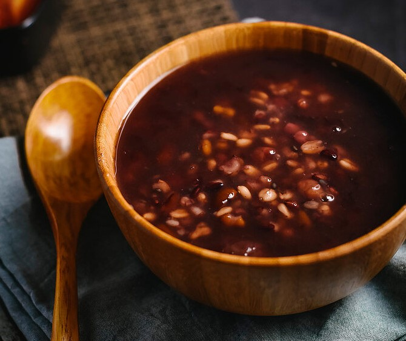

Ba Bao Porridge
| Recipe Details: | |
|---|---|
| Level of difficulties | |
| Serving | 4 pax |
| Cooking duration | 60 minutes |
| Nutritional Facts: | |
| Calories | 200 kJ |
Ingredients
- Red beans - 2 tbsp
- Red beans - 2 tbsp
- Kidney beans - 2 tbsp
- Black beans- 2 tbsp
- Black or purple rice - 2 tbsp
- Glutinous rice - 1/4 cup
- Peanuts - 1/4 cups
- Chestnuts - 5-8
- Walnuts (quartered) - 2
- Dried lily bulbs (bai he) - 2 tbsp
- Dried or fresh Chinese yam (Shan Yao) - 1-2 slices
- Lotus seeds (lian zi) - 8-10
- Chinese red dates - 8-10
- Goji berries - 8-10
- Chinese pearl barley (yi ren) - 2 tbsp
Method
- Pre-soak beans overnight and soak the glutinous rice for about four hours.
- Place all the ingredients in a large stock pot with 12 cups of water.
- Leave a gap between the top of the water and the pot cover to prevent the congee from boiling over.
- Bring to boil, turn the heat to low, cover and simmer for 40 to 60 minutes until all the ingredients are soft to taste. Serve hot.